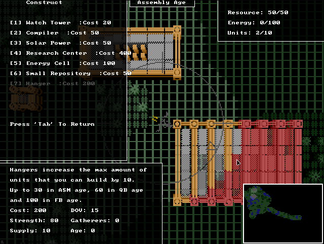
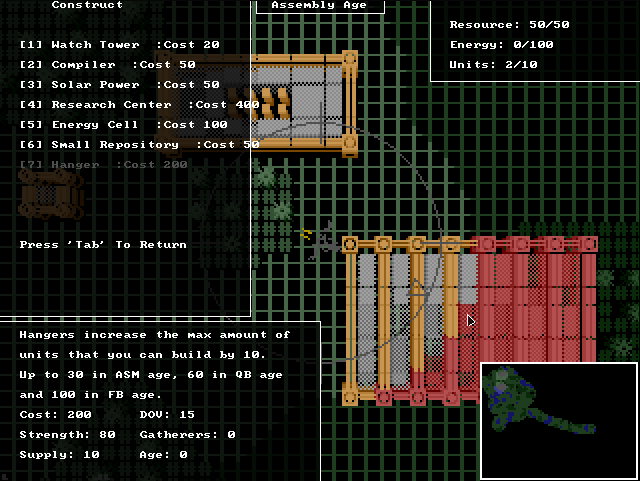

Basic Warfare
Basic Warfare is an action/RTS indie game programmed in 100% FreeBasic! Credits to D.J. Peters for his FBSound Library. Networking done with Winsock and BSD sockets. The entire project took only 2 months to design and develop.
Trailer

Screenshots


 
